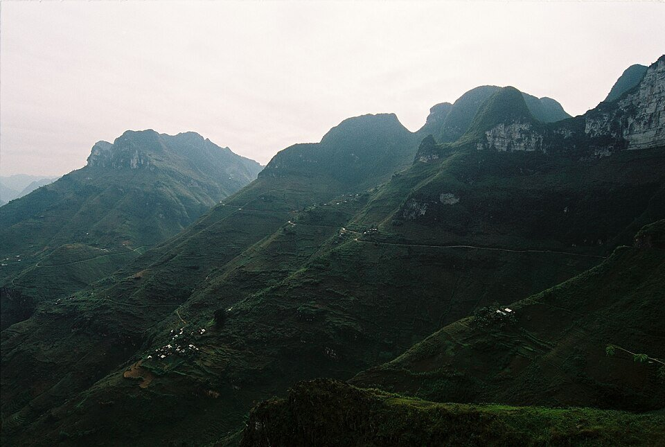

NORTHERN VIETNAM / NOVEMBER 2026
One bend.
Another world.
Four days through the mountains. Three nights with local hosts. A little room for everything in between.
Open the roadbook ↗01 / THE PLAN
Hanoi in.
Mountains ahead.
Arrival on the 7th. The loop from the 8th to the 11th. Hanoi time before returning on the 14th. November 2026 is the provisional date assumption.
FOLLOW THE BENDS
A loop, not a race.
Markers show approximate places. Lines indicate stop order, not navigation or road conditions.
02 / PLACES TO PAUSE
More than
a viewpoint.
Passes, villages and small moments. The package stops anchor this plan; optional additions stay clearly labelled.
03 / THE NUMBERS
Your crew.
Your way to ride.
Mix self-riders, local-driver passengers and other ride options. Valor's listed prices are USD; local planning allowances stay in AUD. No assumed group size.
Listed optional extras · USD
Other planning allowances · AUD
| Item | Unit / basis | Quantity | Subtotal | Status |
|---|
Included meals and homestays are not added again. USD and AUD subtotals are not combined. Flights, insurance, VAT, fees and optional upgrades remain outside the partial estimate.
04 / BEFORE THE FIRST BEND
Pack light.
Prepare well.
Booking questions, gear and a few road habits that make the journey better.
The departure checklist
Ticked items are saved in this browser. They do not confirm any booking.
05 / THE SKY AHEAD
Weather now.
The route ahead.
Each card follows its day's destination. Until the trip date enters the forecast window, we show today's area weather instead—not a November forecast.
Current-area weather and trip forecasts are labelled separately. Forecasts extend up to 16 days ahead; conditions at mountain passes can differ. Weather data: Open-Meteo · CC BY 4.0.
06 / POSTCARDS FROM THE ROUTE
Places worth
looking up for.
06 / THE CREW
Good company.
Questionable quotes.
Unassigned joke ideas · not member quotes
07 / RESEARCH DESK
Start with
the source.
Selected package: Valor. Research checked 5 October 2026. This is a group planning guide, not an operator booking site.